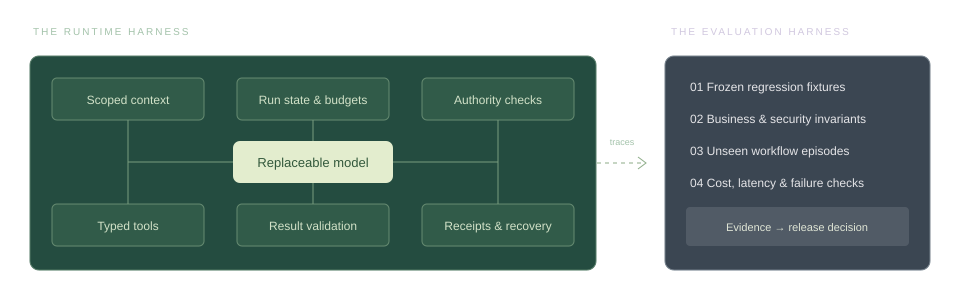

A business workspace that owns its records. A model that can be replaced.
32connected components
06system layers
03workflow walkthroughs
01shared human + AI source
Read this as a blueprint with evidence.
This assessment uses the reviewed S04 dossier, the founder conversation and the supplied second-LLM discussion. The current workspace contains no product implementation source or raw test receipts. Reported results have not been independently rerun. No component is certified production-ready here. Status labels describe evidence, not completion percentages.
01 / PRODUCT
Start where work already happens.
WhatsApp, email and files feed the workspace. Owners get decisions, reliable records and coordinated tasks without rebuilding their daily habits first.
02 / ARCHITECTURE
The business owns the state.
Cloud services hold durable records and workflow state. Phone and desktop are interfaces or scoped connectors. Models interpret and propose.
03 / DELIVERY
Finish one useful loop.
Prove a restaurant workflow from fresh source to correct answer and action. Use the legal workflow next to test how much of the core transfers.
01 The system, layer by layer
The system, layer by layer
Read the main path from top to bottom. Select any part to inspect its purpose, contracts, evidence and acceptance checks. Security and evaluation span the whole system.
TARGET ARCHITECTURE Individual status labels below distinguish current evidence from proposed work.
01
People & experience
Owners, operators and staff see decisions, work, records and answers through scoped interfaces.
Give the owner one place to understand the business and resolve uncertainty. Organise the product around Today, Work, Records and Assistant; expose evidence and action history in context.
Fresh business views, tasks, proposals and source links
Produces
Questions, corrections and explicit decisions
Visible task state, source freshness and action receipts
What the evidence says
The dossier reports an offline replay app with pending-record acceptance, rejection and correction, including restart checks. Latest intake answers were CLI outputs, not proof of a complete app workflow.
Work still required
Connect the app to fresh ingestion and persisted services
Show connection gaps, unresolved facts, decision impact and last sync
Support accessible mobile layout, notifications and a decision history
Acceptance checks
A new delivery appears, is corrected and changes the owner view without CLI intervention
A restart preserves decisions; stale or partial data is labelled
Boundary to preserve
Do not present an assistant response as an executed transaction. Owner, manager and accountant see different authorised objects.
Provide convenient input and notifications across devices. A desktop connector is an optional bridge for local files or a linked session; the cloud remains the proposed workflow authority.
Gradually move useful operational discussion into conversations attached to a task, invoice or matter, while preserving WhatsApp participation during transition.
Authorised linked-session events and selected groups
Backfill, new messages and available edit/revoke/reply metadata
Produces
Normalised observations with original source keys
Connection checkpoints, gap states and media-fetch jobs
What the evidence says
The founder reports that WhatsApp can be read through an online session and periodically supplied to the agent. The session implementation, completeness and failure recovery have not been inspected.
Work still required
Audit the existing connector before choosing Baileys or whatsmeow
Persist session credentials and key material securely and atomically
Use one active worker lease per linked session; distinguish that from one device per account
Capture history limits, edits, revokes, reply keys, reconnect reasons and identity mappings when available
Expose missing history and media; support re-pairing by an authorised owner
Acceptance checks
Replay duplicates, reconnects and out-of-order events without double admission
A revoked session stops collection and alerts the owner
Unavailable media creates an explicit gap instead of an invented fact
Boundary to preserve
Group membership does not grant business action authority. Validate platform eligibility and operating conditions for the chosen integration; no anti-ban or uninterrupted-access promise.
Connector payloads and original source identifiers
Sent, received and stated event times
Produces
Append-only observation records
Edit/revoke/correction links and checkpoint acknowledgements
What the evidence says
The dossier uses source messages and structured intake/ledger processing. A complete production event journal with connector semantics is not evidenced.
Work still required
Version the event envelope and preserve raw provider metadata under retention policy
Separate sent_at, received_at and event_time; record unknown times
Link edits and revokes without silently rewriting the audit history
Commit intake checkpoints only after durable capture; retain gap markers
Acceptance checks
The same source event replayed repeatedly is stored once logically
An amendment remains traceable to the original
A timezone or unknown event time is never silently guessed
Boundary to preserve
Append-only audit design does not mean retaining personal data forever: deletion and retention must cover originals, derivatives, exports and backups.
Attachment metadata, original bytes when available and per-sighting access scope
Produces
Stored originals, OCR or transcripts and page/time references
Availability states and relationships to source events
What the evidence says
The synthetic corpus contains multimedia and an unavailable delivery slip. Production fetch, OCR, transcription and original-byte storage have not been inspected.
Work still required
Fetch under bounded retries; quarantine unsafe files and constrain parsers
Store digest, MIME, size, source sighting and derivative version
Keep unavailable, expired, failed and requested-again states explicit
Use byte hashes to deduplicate storage while preserving every business/source association
Acceptance checks
The same invoice forwarded to another outlet is not reassigned by hash equality
Every extracted number can open the relevant original page or audio span
Failed OCR cannot be mistaken for an empty or fully reviewed document
Boundary to preserve
A byte hash establishes byte identity, not business ownership, invoice authority or semantic equivalence. Derivatives inherit source restrictions.
08Directory, tenancy & rolesEvidence & business stateProposed / verify build+
Resolve who is speaking, which business or matter they belong to and what they may see or do. Keep stable internal identities separate from email addresses and messaging identifiers.
Workspace setup, memberships and explicit account-link decisions
Source identifiers and role assignments
Produces
Actor IDs, organisation/outlet/matter scopes and revocation state
What the evidence says
The dossier demonstrates identity ambiguity with two Ravi accounts and treats other-sender confirmations as context rather than authority. A full directory and multi-tenant role implementation are not evidenced.
Work still required
Create business, outlet, person, membership and source-account tables
Make ambiguous identity links correctable and auditable
Represent accountant access to selected businesses and lawyer access to selected matters
Revoke memberships, sessions, queued actions and derived access consistently
Acceptance checks
Two people with the same display name remain distinct
Removing a staff member blocks retrieval, downloads and later queued execution
An accountant sees only explicitly shared scopes
Boundary to preserve
Ownership of two businesses does not automatically make every staff member cross-business. Server checks must cover retrieval, APIs, media and exports.
Scoped observations, attachments and known business entities
Versioned extraction schemas
Produces
Candidate records with evidence references, unresolved fields and confidence signals
What the evidence says
Latest reported AUTO-INTAKE RUN03 completed ten calls and captured several corrections, but missed the potato par value and CC-224. It still produced one material error and 0/3 strict-clean answers.
Work still required
Measure candidate recall separately from final answer quality
Distinguish new entity, amendment, duplicate and wrong-business forward
Extract units, currency, dates and unknown fields using typed validation
Keep correction and replacement chains in selected evidence
Acceptance checks
The 20 kg par value and CC-224 are captured in the regression set
A statement of intent never creates a completed task
Unseen paraphrases, voice notes and invoice variants pass held-out checks
Boundary to preserve
Confidence is not authority. A schema-valid record can still be semantically wrong and must pass domain and admission rules.
Typed candidates, correction links and valid decision/grant references
Produces
Pending, accepted, rejected or superseded record versions
Causal links and durable change events
What the evidence says
The dossier reports accept/reject/correct replay behaviour, R2 replacement handling and fixes for undated movements, ordering and duplicates. Current implementation was not independently inspected.
Work still required
Formalise admissible transitions and database constraints
Use optimistic concurrency for competing corrections
Represent replacement, retraction and supersession explicitly
Separate ingestion time from business event time in all derived calculations
Acceptance checks
R2 supersedes the original invoice without a second liability
An accepted undated stock movement blocks an exact stock answer until resolved
Correcting a movement applies the adjustment exactly once
Boundary to preserve
The model may propose a record; admission is enforced by deterministic rules and authorised decisions.
Accepted record versions, cut-off times and unresolved dependencies
Produces
Inventory balances, discrepancies, payment states and freshness markers
What the evidence says
The known corpus tests 17.6 kg net tomatoes, the 19.45 kg potato discrepancy and a 12.5 kg issue already included in the sheet. Generalised production projections are not demonstrated.
Work still required
Define units and deterministic calculations outside the model
Rebuild views from versioned records and record the projection version
Invalidate dependent answers and tasks when upstream facts change
Show the cut-off and unresolved inputs alongside numerical results
Acceptance checks
32.7 − 13.25 = 19.45 kg; the included 12.5 kg issue is not subtracted again
The later-than-cutoff events do not leak into the answer
Rebuilding the same ledger yields the same current state
Boundary to preserve
A materialised view is a convenience, not a second independent source of truth. Stale caches must be detectable.
Question, actor scope, current business records and source index
Produces
Bounded context packet with source IDs and completeness flags
What the evidence says
The dossier context packet reached approximately 108.7 of 120 KB. Small citation tests passed, but no reliable large-history retrieval result is demonstrated.
Work still required
Start with exact IDs, relational queries and full-text search
Add semantic retrieval only for an observed recall need
Retrieve dependency closure: original, replacement, correction, hold and latest state
Filter permissions before retrieval and again before output; version caches
Acceptance checks
Wrong-outlet evidence is excluded even when semantically similar
A hold or retraction survives context reduction
At three times history, compare critical-evidence recall and answer quality with full-history baseline
Boundary to preserve
A vector database is an optional index, never the authoritative record store or an access-control boundary.
Evidence packet, workflow version and allowed capabilities
Produces
Answer, proposed business change or scheduled continuation
Run trace and terminal/pending state
What the evidence says
The dossier has extraction and answering runs plus adapter repairs. A complete durable multi-user production orchestrator is not evidenced.
Work still required
Define request, run, step and workflow identifiers
Bound model calls, tool calls, time and cost
Persist transitions so workers can resume safely
Hold only work that depends on an unresolved decision; let independent work continue
Acceptance checks
A timeout produces a visible run state rather than a false success
A pending payment approval does not stop unrelated inventory capture
A resumed run cannot execute a completed side effect again
Boundary to preserve
Evaluation-run rules and production recovery rules are different contracts. Historical no-retry evaluation runs remain failed even if production could recover.
Make model providers replaceable through typed requests, capability checks and consistent outcomes. Use expensive reasoning only when measured task quality requires it.
Question, authorised current view and selected evidence
Produces
Answer or brief with source references, cut-off and limitations
What the evidence says
S2 achieved a 24/24 composite on returned known-test answers; later citation replay was 2/2. Fresh AUTO-INTAKE RUN03 remained 0/3 strict-clean, including one material error.
Work still required
Keep the wording separate from deterministic quantities and status
Let the owner open originals and correct the underlying record
Build briefs from deltas and exceptions rather than retranscribing every chat
Label missing media, incomplete intake and stale connectors
Acceptance checks
An owner can trace every material number to a source or calculation
The answer does not imply a task is complete from a promise to do it
A brief reflects newly accepted corrections and preserves payment holds
Boundary to preserve
The known-answer score is not an end-to-end reliability claim. Answer quality cannot compensate for missed intake.
Eventually let two explicitly authorised business workspaces exchange a bounded request or record, with receiving-side validation and human accountability.
Contain parsers, connector jobs and optional code execution so a malicious document or faulty repair cannot reach unrelated business data or credentials.
Sandboxing and connector repair are recommendations from the second discussion. No production isolation or automated repair flow is evidenced.
Work still required
Prefer narrow APIs over general shell/browser control
Apply least-privilege network and filesystem access with resource budgets
Test connector changes against fixtures in an isolated environment
Promote reviewed patches through release gates rather than self-repairing production
Acceptance checks
A hostile attachment cannot invoke tools or read unrelated tenant files
An unreviewed repair cannot receive production secrets or deploy itself
The required provider endpoints work without broad unrestricted egress
Boundary to preserve
A simplistic one-domain allowlist may break legitimate provider auth/CDN flows; scope tested endpoints deliberately. Containers alone are not a complete boundary.
Measure whether changes improve the whole workflow, preserve invariants and work on unseen cases, independently of the production agent’s self-assessment.
Versioned fixtures, hidden expected outcomes and build/model/config versions
Produces
Stage scores, material errors, traces, regression comparison and release decision
What the evidence says
A meaningful synthetic harness exists: multiple model runs, strict/material grading, replay checks and citation tests. Fresh intake still fails; held-out production reliability is not established.
Work still required
Freeze reproducible fixtures and receipt paths before changes
Add stage-level evaluation, adversarial sequence tests and held-out episodes
Keep answer quality separate from intake and execution completeness
Define explicit gates and require the existing reviewer process when confirmed
Acceptance checks
A release reproduces the known baseline before claiming an improvement
Held-out episodes include identities, corrections, unknown times, revokes and side-effect uncertainty
Run failures remain failures in reported denominators
Boundary to preserve
Do not train to the 24 known questions and call it generalisation. Composite answered subsets are not successful end-to-end runs.
No matching components. Try a broader term or reset the filters.
03 What “the harness” actually means.
What “the harness” actually means.
Two different systems are often given the same name. Keep their responsibilities separate, and connect them through versioned traces and repeatable checks.
RUN-TIME
Make the agent behave.
The runtime harness surrounds the model with state, permitted context, tools, budgets, validation and recovery. It operates the live workflow.
TEST-TIME
Prove the behaviour.
The evaluation harness runs frozen and unseen scenarios, checks outcomes and records failures. It decides whether a version is ready to release.

Harness partDuring a live runWhat the evaluation must prove
Context builder
Missing context, cross-tenant leakage and oversized prompts.
Loads only permitted records and the evidence needed for this request, including correction and hold chains.
Can each failure and dollar be attributed to a business outcome?
Keep the harness. Change the centre of gravity.
The next milestone is a fresh business event completing its whole journey in the app. A known-question score is one check inside that journey, not the product milestone.
Where the boxes in your reference image belong
Memory, planning, RAG and tools have specific jobs here. None of them replaces the business ledger, permission checks or action receipts.
Short-term memory
The bounded working context for one run: the request, selected evidence, tool results and current step. Durable checkpoints live outside the prompt.
Do not treat a model-written summary or a vector search result as the authoritative ledger. Preference changes need scope, provenance and revocation.
Planning
Choose the next permitted step, record its dependencies and revise the plan when evidence changes. Use predictable workflow steps for repeated business processes.
A plan is an intention. It is not an approval, execution receipt or completed task.
RAG / retrieval
Retrieve authorised records and source evidence before generating an answer. Exact business identifiers and amendment relationships matter alongside semantic similarity.
Protocol compatibility does not grant authority. Authenticate the caller, validate arguments and enforce object scope in the executing service.
Multi-agent coordination
Separate workers or specialists may handle bounded tasks when evaluation shows a benefit. Share typed state and causal references, not unchecked conversation summaries.
Do not add multiple agents by default. Delegation needs scopes, budgets, loop limits and receiving-side validation.
Authentication versus authorisation
Authentication establishes the person, device or service identity. Source consent grants specific connector access. Authorisation decides which exact business object and action that identity may use.
Signing in, linking WhatsApp or granting Gmail read access does not authorise sending messages, approving invoices or accessing every matter.
04 Follow the work.
Follow the work.
Three walkthroughs make the interactions concrete. These are target flows, with evidence boundaries stated for each.
Varun · owner of Forefathers and Concu
A delivery message becomes a trustworthy stock answer.
Illustrative target workflow using the dossier’s known test cases. It is not an implemented end-to-end demo.
01
Capture
Source observation
A delivery message and invoice arrive in the approved outlet group. Store the source key, sender, times and media availability; do not treat the group name alone as invoice ownership.
Extract the delivery, outlet, items and units. Link the later 17.6 kg net tomato correction to the candidate delivery only when the evidence supports the relationship.
R2 replaces the earlier FF invoice. The Concu invoice forwarded to Forefathers stays associated with Concu. Ambiguous identity or replacement goes to the owner.
Compare the 32.7 kg sheet figure with the 13.25 kg physical count: a 19.45 kg gap. The 12.5 kg issue is already in the sheet, so it must not be subtracted again.
Create a permitted discrepancy task for the responsible person with the source evidence. “I’ll ask the chef” is a follow-up intention, not task completion.
Answer the owner with source links, cut-off and missing evidence. FF-781 R2 ₹2,099.20 remains processing and the no-second-transfer hold survives. A later correction invalidates affected views.
Arkaj · principal; Ramya · legal assistant and operations lead
A court email becomes assigned work with the right documents.
Founder scenario. Every step below is a target capability; production legal workflow is not evidenced.
01
Capture
Email observation
The principal’s authorised mailbox receives a court update. Persist the message and attachment references, with a sync checkpoint and matter-access scope.
Extract court, matter number, parties and date. Compare with existing matters; classify as amendment, new matter or ambiguous match. Similar subject lines do not justify an automatic merge.
Ramya reviews uncertain matches and consequential dates against the original notice. The principal’s mailbox access does not grant every support worker access to all cases.
Propose or create the permitted task with responsible staff, internal due date and the correct file versions. Delivery and acknowledgement are tracked separately.
Create or update a linked calendar event using the verified date and timezone. A calendar failure after task creation leaves a recoverable partial state, not a completed workflow.
A later court amendment links to the same matter, marks dependent work for review and updates authorised assignees. Retain the prior version and the decision that changed it.
Inspect the provider using its object or request identifier. Do not repeat the action just because the response was lost. If no safe check exists, escalate the ambiguity.
The project has a meaningful prototype and useful tests. It does not yet have demonstrated production reliability. Keep the latest fresh-intake failures visible beside the successful narrow tests.
Known-answer composite
24 / 24Demonstrated in dossier
S2 combines 9 + 15 returned answers on known questions. Stopped batch runs remain failed. This is not a clean single production run or a generalised accuracy rate.
AUTO-INTAKE RUN03: ten calls completed, but par 20 and CC-224 were missed. One answer had a material error; the other two had strict gaps. Latest output was CLI, not app.
Two known answers were strict-clean; 16/16 supporting native citations. $1.126136 total and 65.5 / 85.6 seconds. Tiny sample; not a latency or cost service guarantee.
WhatsApp online-session reading is founder-reported. Gmail is described as straightforward. Neither completeness nor recovery was independently verified.
The gates below are proposed experiments and targets. They are not forecasts, guaranteed results or additive percentage gains.
Intake completeness+
Definition. Critical expected facts captured / critical facts in labelled episodes; also report false critical candidates.
Baseline. Known misses include par 20 and CC-224. General rate unknown.
Proposed gate. Proposed target: halve missed critical facts against the frozen baseline without increasing false critical candidates.
End-to-end correctness+
Definition. Episodes with correct intake, state, answer and intended action / all attempted episodes.
Baseline. No validated production baseline. Latest fresh-intake answer check: 0/3 strict-clean.
Proposed gate. Zero critical errors in the agreed release suite; held-out threshold and observation window must be agreed before pilot.
Evidence recall at scale+
Definition. Required supporting and constraining evidence retrieved / all labelled required evidence.
Baseline. Packet around 108.7 / 120 KB. Large-history recall unknown.
Proposed gate. Proposed experiment at 3× history: ≥98% critical evidence recall, no missed critical holds/corrections and no answer regression.
Owner effort+
Definition. Review minutes and manual decisions per completed comparable workflow.
Baseline. Measure in pilot before automation.
Proposed gate. Proposed target: ≥25% less review time and ≥30% fewer manual decision actions, with quality preserved.
Outcome cost+
Definition. Model, infrastructure, storage, failed attempts and human review cost / correctly completed workflows.
Baseline. Citation replay cost is a tiny test sample, not unit economics.
Proposed gate. Proposed routing target: ≥25% lower cost, no new critical errors and ≤2 percentage-point completion decrease on paired tests.
Latency & freshness+
Definition. Median and tail time to useful state and completed work, plus age/coverage of each source.
Baseline. Two citation responses took 65.5 and 85.6 seconds. No general service baseline.
Proposed gate. Proposed cached-state target: <2 seconds for a fresh state card; separately measure generation and external action latency.
07 Build in complete, testable steps.
Build in complete, testable steps.
Sequence by dependency and evidence. These are work packages, not promised two-week sprints; team capacity and the source audit determine duration. Security begins in the first package.
S0
Establish the truth
START HERE
A reproducible baseline and a build map that matches the code.
Locate current repositories, schema, prompts, tests and receipt files
Reproduce known results with pinned versions and explicit denominators
Map current auth, storage and trust boundaries; confirm reviewer policy
EXIT GATE
Every “built” claim links to code plus a reproducible check; gaps are logged.
No framework rewrite or calendar promise before the audit.
S1
Reliable capture & identity
After S0
Approved sources arrive durably and gaps are visible.
Harden existing WhatsApp and Gmail adapters
Directory, scoped login, connector consent and secrets
Original media storage, observation envelopes, checkpoints and health
EXIT GATE
Duplicate, reconnect, revoke, unknown-time and unavailable-media cases pass; unauthorised access is denied.
Do not claim complete history unless measured.
S2
Finish one restaurant loop
After S1
A fresh message becomes an accepted record and a correct owner answer inside the app.
Close missed par and invoice intake cases
Connect review decisions, ledger corrections, computed views and citations
Run the full delivery → discrepancy → correction → answer loop
EXIT GATE
No critical error in the agreed release suite; unseen episodes pass the agreed quality threshold; restart preserves state.
Avoid broad multi-agent orchestration.
S3
Make work happen safely
After S2
Assignments and common tools execute with receipts and recovery.
Task lifecycle, reminders, asynchronous decisions and outbox
PDF / stock tools, typed action adapters and uncertain-outcome recovery
Export manifest and an initial restore test
EXIT GATE
Side-effect timeout, duplicate execution, stale approval and partial-success drills pass.
Payment execution and full accounting remain outside the initial scope.
Consequential-date review, scoped files and assignments
Amendment propagation through tasks and calendar
EXIT GATE
Wrong-matter, duplicate notice, ambiguous date, restricted file and later-amendment cases pass with the responsible team.
Do not infer legal obligations without the designated reviewer.
S5
Pilot, measure & harden
After S2, S3
Consented real workflows establish value, reliability and unit cost.
Held-out episode evaluation and a small monitored pilot
Measure review time, completion, latency, coverage and successful-task cost
Permission probes, restore drill, retention, incident response and load tests
EXIT GATE
Pilot acceptance criteria are agreed before launch and met over a stated observation window.
No percentage uplift claim without paired evidence; S4 can validate a second domain separately.
S6
Expand the useful surfaces
After S5
Add native device features and collaboration where they measurably improve repeated work.
Voice, device notifications and local connector packaging where needed
Object-linked chat and accountant collaboration
Consider cross-business agents after scoped collaboration works
EXIT GATE
Each surface has a specific user need and measured adoption or workflow benefit.
A complete WhatsApp replacement is not the MVP gate.
Next concrete milestone
Audit the existing implementation, then demonstrate one fresh restaurant delivery through capture, correction, accepted state and a sourced owner answer in the app. Add task execution and recovery to complete the operational loop.
08 Own the business logic. Borrow selectively.
Own the business logic. Borrow selectively.
Technology choices stay provisional until they have been checked against the existing code, deployment requirements and a measured workflow need.
Direction
Runtime location
Cloud owns durable workflow state; device connectors are optional.
Matches the founder’s clarified deployment direction and supports work while a device is offline.
Revisit when: Data residency, latency or customer constraints require a different deployment.
Recommendation
Harness investment
Keep and strengthen the current harness; connect it to an end-to-end workflow.
Existing tests expose meaningful errors. The risk is overfitting known questions, not the existence of a harness.
Revisit when: The source audit reveals an unmaintainable or incompatible core.
Recommendation
Agent count
Start with one bounded orchestrator and typed workflow steps.
More agents add handoffs and cost before the intake and state semantics are reliable.
Revisit when: A measured specialist improves a specific failure class without unacceptable cost or latency.
Provisional
Storage
Reuse sound existing storage; prefer relational state plus object storage for a new service.
Records, permissions and causal links need transactions; media needs durable bytes.
Revisit when: The audit establishes another suitable technology already in use.
Recommendation
Retrieval
Exact IDs and full-text first; add semantic indexing when it solves observed misses.
An invoice correction or hold is a relationship problem as well as a similarity problem.
Optional components or design references; neither is a required product foundation.
Adoption should satisfy isolation, licensing, provider and upgrade contracts, rather than determine business semantics.
Revisit when: A bounded evaluation shows lower total engineering and operating cost.
Recommendation
Permissions
Request access for enabled capabilities, with separately scoped actions.
“Maximum awareness” should mean approved useful coverage, not maximum standing authority.
Revisit when: A specific workflow needs a clearly explained additional scope.
Later
Native chat & CA channel
Validate object-linked collaboration and accountant access before building an agent network.
Distribution and migration hypotheses need actual user evidence.
Revisit when: Pilot partners repeatedly request cross-business structured exchange.
Decisions the source audit must settle
Where are the current source repository, database schema, test fixtures and raw receipts?
Which WhatsApp session/library and hosting arrangement are actually in use, and what is its measured history/media coverage?
Which customer and one operational workflow will be the first consented pilot?
Which actions may run under standing rules, and which require an owner, accountant or responsible lawyer?
What retention, deployment region, recovery and contractual requirements do pilot customers need?
What team capacity and stack already exist? Sprint labels are work packages, not promised two-week delivery dates.
09 SAME CONTENT · MACHINE-READABLE
A reference for your next AI conversation.
Stable IDs. Explicit dependencies. Evidence labels. Full component briefs. The human page and machine files are generated from the same content.
Share the complete reference with another model to preserve the distinctions between requirements, recommendations, reported results and unverified implementation.
This reference is private by default. An unauthenticated external model may not be able to open its URL; use the downloadable or copied reference in that case. No connector credentials or raw customer conversations are included.
10 Sources, scope & upkeep.
Sources, scope & upkeep.
Evidence and inspiration are different. Project claims come from the dossier or founder statements; technical references inform choices without proving implementation.
167 synthetic messages and displayed grading criteria reviewed previously. Underlying attachment bytes, source code and original receipts were not audited. Latest timeline takes precedence over stale summary sections.
E02
Founder requirements in this conversation
First-party requirements / reported capability
Restaurant and law-chamber examples; WhatsApp online-session access reported working; cloud runtime, device apps, model independence and eventual native chat requested.
E03
Supplied second-LLM conversation
Proposal, not implementation evidence
Pasted text reviewed. Directory, causal receipts, queued decisions and portability adopted as recommendations. Home-node requirement, effort percentages and unproven corpus links are not accepted as facts.
E04
Supplied RAG / agent architecture image
Visual inspiration
Used to distinguish retrieval, orchestration and tools. It is not the SupaBiz architecture or evidence that multi-agent RAG is needed.
Generate sequences such as accept, correct, revoke, replay and restart to check invariants.
How this stays trustworthy
Update the canonical content with dated evidence, preserve component IDs, regenerate the human and AI files, and verify both. A changed status needs a supporting result and its limitations. This page is a static snapshot; it does not monitor the product or update itself.
Not accepted as facts: the other chat’s 70/20/10 engineering split, a mandatory home node, invented retraction times, an unproven S39 → S27 reply link, blanket licence claims, or a guarantee that a particular network/account practice prevents WhatsApp restrictions.